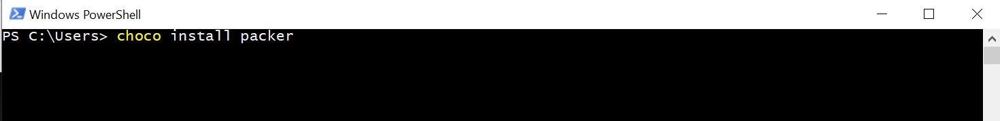
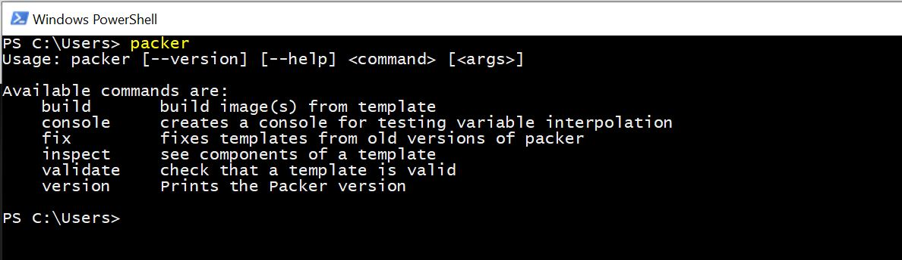

Installing Packer on Windows
-
You can install Packer by running
choco install. -
After installing Packer, you can verify the installation by opening a new
command prompt and typing
packerand then pressing enter.You should see the following if packer was installed successfully: